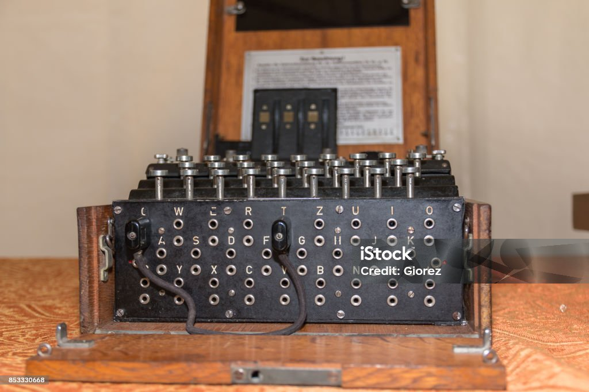
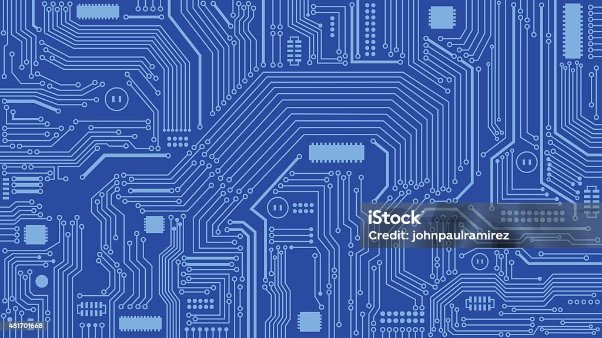
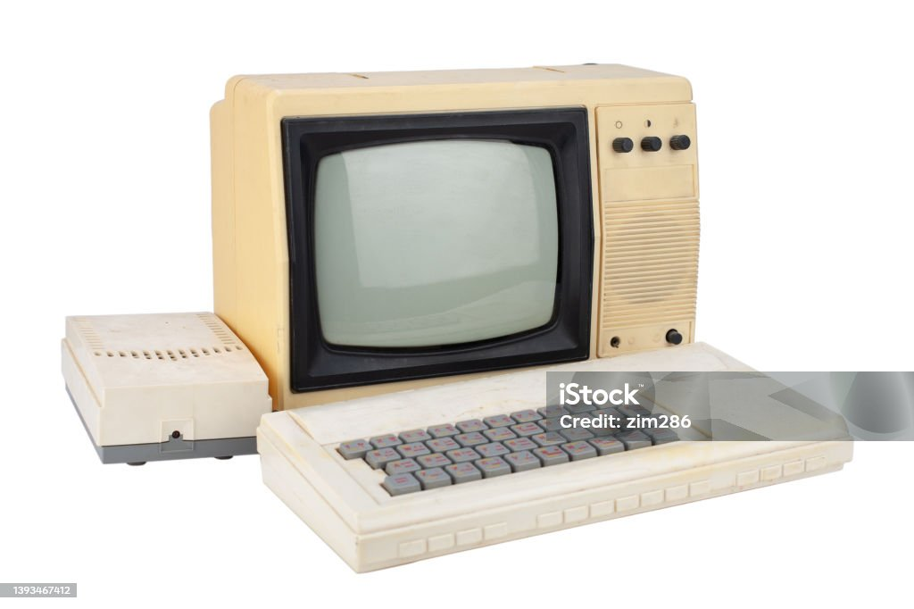

In the Beginning ...
The history of computers starts out about 2000 years ago, with the birth of the abacus.
When the beads on the abacus are moved around, according to programming rules to memorized
by the user, all regular arithmetic can be done. In 1671, Gottfried Wilhelm von Leibniz
invented a computer that was built in 1694. It could add, and, after changing some things
around, multiply. About a century later Thomas of Colmar created the first succesful
mechanical calculator that could add, subtract, multiply, and divide.
Other Memorial Events ...
- In 1812, Baggage realized that many long calculations were really a series of predictable actions
that were constantly repeated. He began an automatic mechanical calculating machine, which he called
a difference engine.
- Herman Hollerith and James Powers made a step towards automated computing with the development of
punched cards. Reading errors were reduced dramatically, workflow increased, and stacks of punched
cards could be used as memory of almost unlimited size. For more than 50 years, punched card machines
did most of the world's first business computing.
- The start of World War II produced a large need for computer capacity. In 1942, John P. Eckert and John
W. Mauchly decided to build a high-speed electronic computer to do the job. Known as ENIAC, this machine
could multiply two numbers at a rate of 300 per second.
- Early in 50's two important engineering discoveries changed the image of the computer field - Magnetic
Core Memory and Transistor - Circuit Elements. These technical discoveries quickly found their way into
computers. Such computers were mostly found in large computer centers operated by industry, government,
and private laboratories.



- In the 1960's, efforts to design and develop the fastest possible computer with the greatest capacity
reached a turning point with the Stretch computer by IBM. Stretch was made with the fastest access time,
and total capacity in the vicinity of 100,000,000 words.
- Many companies, some new to the computer field, introduced programming minicomputers supplied with software
packages in the 1970's. The "shrinking" trend continued with the introduction of personal computers (PC's),
which are programmable machines small enough to be purchased and used by individuals. Many companies, such as
Apple Computer and Radio Shack introduced very successful PC's in the 1970's.
- By the late 1980's, some personal computers were run by microprocessors that, handling 32 bits of data at a
time, could process about 4,000,000 instructions per second.
- Computer networking, e-mail and the Internet, and electronic publishing are just a few of the applications that
have grown in recent years. Computers continue to decrease in price, offering the promise that soon, "computers
will reside in most homes, offices, and schools".
Great Computer Quotes ...
"Men are from Mars, Women are from Venus, Computers are from Hell"
~Author Unknown
"Give a person a fish and you feed them for a day;
teach that person to use the Internet and they won't bother you for weeks."
~Author Unknown
"To err is human, but to really foul things up requires a computer."
~Farmer's Almanac, 1972
Female Pioneers of Computer Science
There are 6 major female pioneers in the history of computer science:
- Ada Lovelace:
Created the very first computer program.
- Grace Hopper:
Invented computing methods and devices; "the complier" for example.
- Katherine Johnson:
Advanced human space exploration.
- Margaret Hamilton:
Developed programs that influence how todays computers work.
- Stephanie Shirley:
Created programs dedicated to studying technology's impact on social and ethical issues.
- Megan Smith:
Promoted diversity throughout IT workplaces.
The new CSS feature used for this assignment is the "animation" property. This feature
was applied by using "@keyframes" on the corresponding css stylesheet, along with a "div"
and assignment of animation functions to change my main boxes background color from white to green
and then reverse from green to white on an infinite loop. Information found on W3Schools.
All images used on this site were provided from ISTOCK royalty free images.
Thank you for viewing my page! I hope you enjoyed!